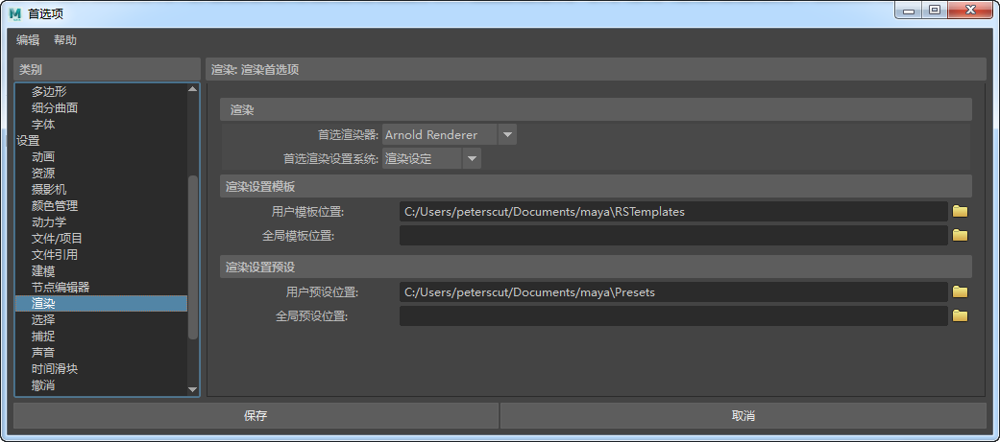
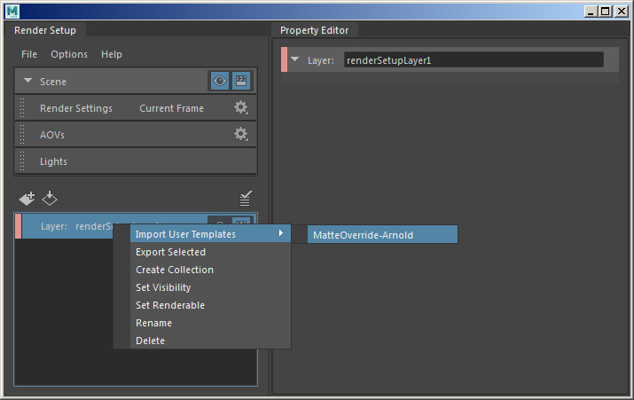
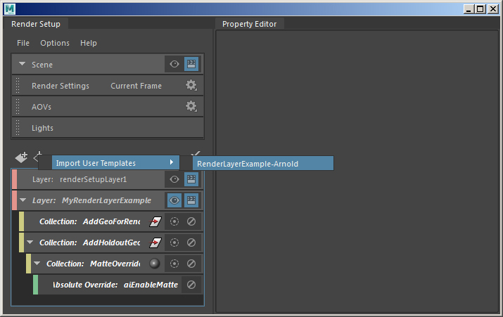

在 Maya 的“渲染设定”(Render Setup)窗口中，提供了两个 MtoA 模板节点。它们包含 Ai 标准着色器的基本覆盖。
使用与安装 Maya 时不同的用户身份安装 MtoA 可能会产生预设不起作用的问题。如果缺少它们，请转到 MtoA 安装文件夹，然后将 RSTemplates 中的文件复制到“用户模板位置”(User Templates Location)。
您可以在 Maya“首选项”(Preferences)的“渲染”(Rendering)部分中设置“用户模板位置”(User Templates Location)。文件应包含在用户目录的 ../maya/RSTemplates/ 位置中。

如果模板路径已正确设置，您应该会在“渲染设定”(Render Setup)窗口中看到以下 Arnold 模板：

蒙版覆盖模板

Arnold 渲染层模板